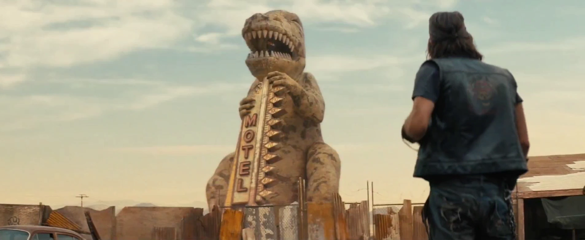

ディンキー・ザ・T-レックス
Dinky the T-Rex
LOCATION DATA

地域:
モハビ・ウェイストランド
所属:
プリム / ダイノ・ディーライト
登場:
Fallout: New Vegas
Fallout TVシリーズ
Fallout TVシリーズ
ディンキー・ザ・T-レックス (Dinky the T-Rex) は、モハビ・ウェイストランドの「プリム」にある、巨大なティラノサウルスの建造物（アトラクション・展望台）です。TVドラマ版にも登場します。
背景
戦前のアトラクションであり、プリムの町、特に「ダイノ・ディーライト・モーテル」のシンボルとして機能しています。「The World's Largest T-Rex（世界最大のT-レックス）」と書かれた温度計を持っています。
2281年（New Vegas時代）では、ディンキーの口の部分が「スナイパー（狙撃手）の巣」となっており、ブーンの元同僚である「クレイグ・ブーン」と「マニー・バルガス」が交代でノバック（Novac ※注：ディンキーがあるのはプリムではなくノバックです）の町をレイダーやリージョンから守るために見張りを立っています。
重大な訂正（ロア上の注意点）：
ゲーム設定上、「ディンキー・ザ・T-レックス」と「ダイノ・ディーライト・モーテル」が存在するのはプリム（Primm）ではなく「ノバック（Novac）」という町です。ですが、一部の資料やメタ上の記述で混同されがちです。
ゲーム設定上、「ディンキー・ザ・T-レックス」と「ダイノ・ディーライト・モーテル」が存在するのはプリム（Primm）ではなく「ノバック（Novac）」という町です。ですが、一部の資料やメタ上の記述で混同されがちです。
TVシリーズでの登場 (シーズン2)
ドラマ版シーズン2で、象徴的な温度計を持つディンキー・ザ・T-レックスの姿が登場します。
2296年現在でもその巨大な姿を留めており、首元や口の中にある展望通路のような部分も見受けられます。ゲーム時代と同様に、「ノバック」周辺のモハビにおける重要なランドマークとして鎮座しています。

Impression
Fallout: New Vegas屈指の人気NPCの一人「第1偵察隊のクレイグ・ブーン」が狙撃銃を構えて立っていたあの恐竜像です。口の展望台から遠くを通るリージョン兵を狙撃した思い出を持つプレイヤーも多いでしょう。ドラマ版でもそのポップで狂気じみた外観が完璧に再現されており、2296年現在誰が口の中に立っているのか（あるいは誰もいないのか）が気になるところです。
Fallout: New Vegas屈指の人気NPCの一人「第1偵察隊のクレイグ・ブーン」が狙撃銃を構えて立っていたあの恐竜像です。口の展望台から遠くを通るリージョン兵を狙撃した思い出を持つプレイヤーも多いでしょう。ドラマ版でもそのポップで狂気じみた外観が完璧に再現されており、2296年現在誰が口の中に立っているのか（あるいは誰もいないのか）が気になるところです。
Category:Fallout: New Vegas locations
Category:Fallout TV series locations
Category:Monuments